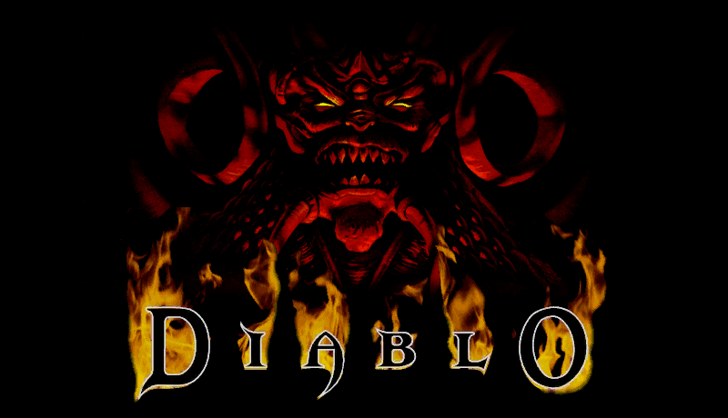

DIABLO 1 HD: Belzebub
HTML Documentation v1.0

What you should be aware of:
This is the first Documentation release, and it contains only what i have found or noticed while playing, future releases of the Documentation will contain more precise and complete information. And i hope it works well in most of the modern browsers.
What else needs to be done:
- Correcting anything that is wrong.
- Finding out the Bonus number for regular Potions according to each character.
- Reaching the Required Magic of learning a couple of the high end spells, some 13-15 levels.
- Doing a propper Spell page with all info on spells and the synergies.
- Knowing the exact bonus of shrines like Experience, Mastery, Protection, Spooky and the Fountain of Tears well.
- Figuring out the Base Stats and Skill synergies during level progression for all characters.
- Maybe get some gifs for the Armor Looks page, otherwise i'll just put some static images.
- Confirming the exact range of Armor Class of all armor pieces, right now it's just what i have observed.
- Adding the Weapon Speed and precise Attack Time value for all base weapon types, i just need a few more white item types.
- Possibly gifs for the animated items (i tried to do the SYMBOL OF POWER unique ring but it turned out shitty)
- Hopefully a Prefixes & Suffixes list, thou i don't know how and i will most likely guestimate, like i did on Crafting Recipes page.
- Completing the Crafting Recipes page, also with all the Required Levels to learn them, when i find more recipes.
- Making a Bestiary with images and description of skills, being a monumental chore that i will take on last.
Help
If you see anything that's incorrect, incomplete or ill-formatted, please help by posting it on the forum so it can be corrected!
Thanks
I wish to thank:
- BrightLord and Noktis for making and hosting this awesome mod
- the whole community for the support, reporting errors and suggestions
- you personally for reading all the way down!
- kambala and Quirinus for compiling the Median XL docs which i used as a template
No previous version, this just refreshes the page.